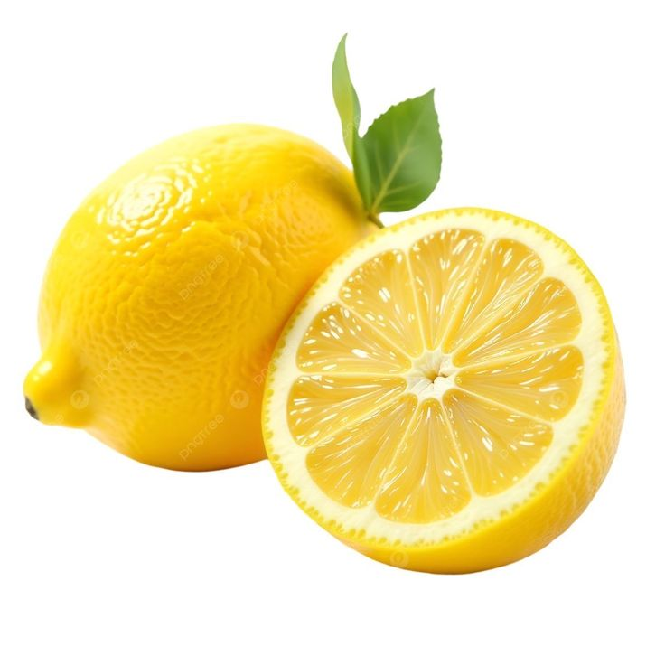

Lemon

| Index |
|---|
| Short description |
| Nutritional value |
| Health benefits |
| Best time to eat |
| Who shoud avoid |
| Fun fact |
Short Description
Lemon is a citrus fruit known for its sour taste and refreshing aroma. It is widely used in cooking, beverages, and home remedies. Lemons are rich in vitamin C and antioxidants.
Nutritional Value
| Nutrient | Amount |
|---|---|
| Calories | 29 kcal |
| Carbohydrates | 9 g |
| Dietary Fiber | 2.8 g |
| Vitamin C | 53% |
| Potassium | 138 mg |
| Antioxidants | Present |
Health Benefits
- Boosts immunity
- Aids digestion
- Detoxifies the body
- Improves skin health
- Helps prevent kidney stones
Best Time to Eat
Lemon is best consumed in the morning, especially as lemon water.Morning consumption helps detox the body and improve digestion.
Avoid consuming lemon:
- In excess if you have acidity
- Late at night
Best practice: Warm lemon water in the morning.
Who Should Avoid
- People with gastric problems or ulcers
- Those with tooth sensitivity
- People with acid reflux, if taken in excess
Fun Fact
- Lemons were once used as medicine against scurvy
- Lemon trees can produce fruit all year round
- Lemons are technically berries